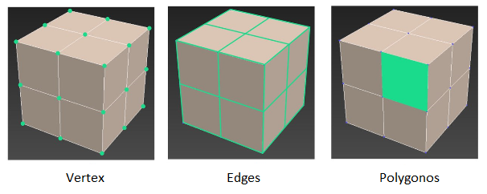

.png "3D modeling")
Why you need study 3D graphics and where does it apply?
There are a lot of areas of application, because computer graphics have entered our life extensively, and every year this direction covers more and more areas.
Let's look at several directions:
1. Simulation for games
Thousands of games are produced annually for PC, game consoles, and mobile devices, so this industry always requires good 3D specialists!
2. Modeling techniques
Before starting production of any model of any equipment, a prototype is first created, with the help of modern 3D technologies and graphics.
3. Subject modeling
The whole industry is subject modeling for special resources-drains, where various models are sold.
4. Jewelry models
Currently, 3D models of jewelry are increasingly used in advertising, online store sites, or catalogs. Photos fade into the background.
5. Modeling for cartoons
Computer graphics are used not only in cartoons, but also in movies. It allows you to make your works more colorful, now it's no secret!
6. Architectural visualization
A separate direction in 3D is the visualization of interiors and exteriors. Every year, new houses and residential complexes are built, people make repairs, but before it begins, they often turn to designers to see their future home.
Render of works
Render — a term in computer graphics that refers to the process of obtaining an image from a model using a computer program.
To render your work, we will need a render such as Corona (Download), free trial on 45 days.
To open the Render Setup window, click F10 or click the button on the toolbar (the kettle with a gear).

Before you start working in Corona, you need to set it as the default render engine.
Go to the Common tab and expand the Assign Renderer drop-down scroll. The items in this scroll allow you to set a render engine for rendering, for displaying materials in the Material Editor, and a render engine for a specific realtime or pseudo-realtime rendering of a scene directly in the projection window.
Click on the colon opposite the item Production, as well as Material Editor (if the button with the lock is pressed) and select CoronaRenderer in the list.

To render a full-fledged image with shadows and see the scene, you need to put a special HDR map.
To do this, press the key 8 on the keyboard-a window opens where you need to put a check mark on Use Map and press the None button, a window appears with the map selection-BitMap – loads HDR file.
What does a 3D model consist of?
Vertex – these are conditional reference points that are located at the intersection of lines. Vertexes can't exist separately from everything.
Edges - these are lines that form the shape of an object. Edges can also not be separated from other parts of the object.
Polygons - these are surfaces that are formed from edges and vertices. These surfaces can be located in space in different ways, and all objects are constructed from them.